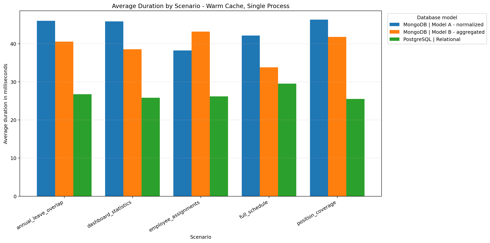
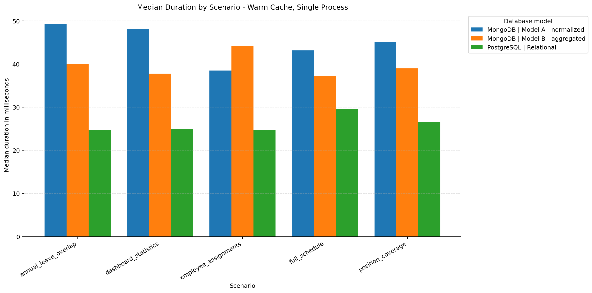
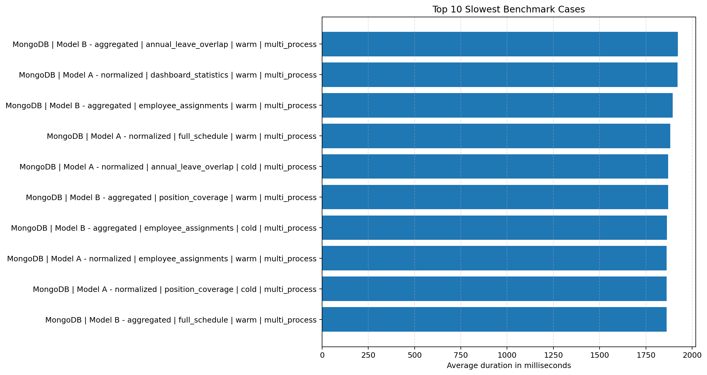
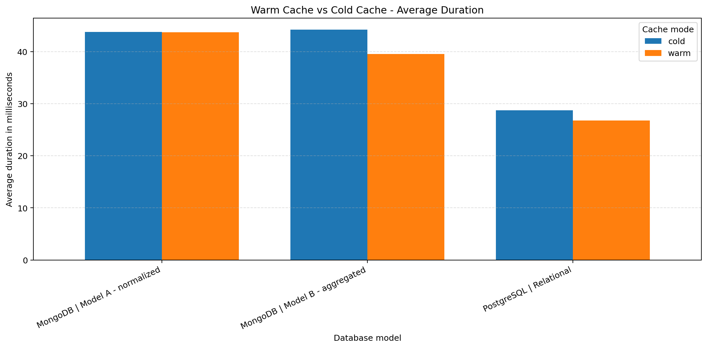
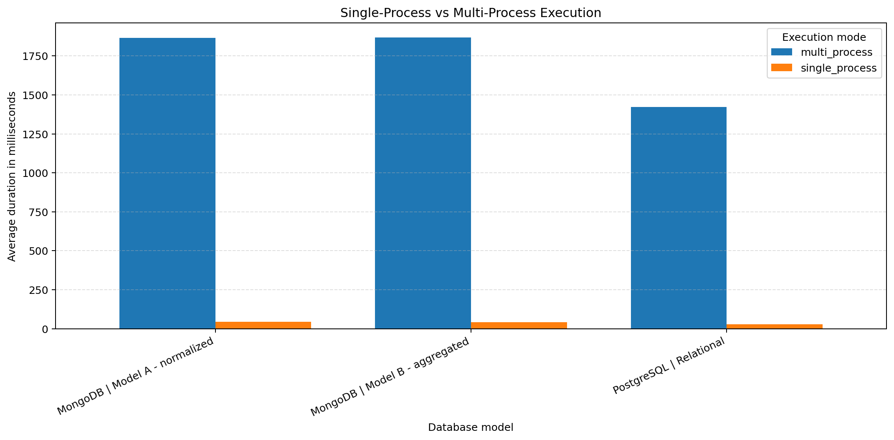
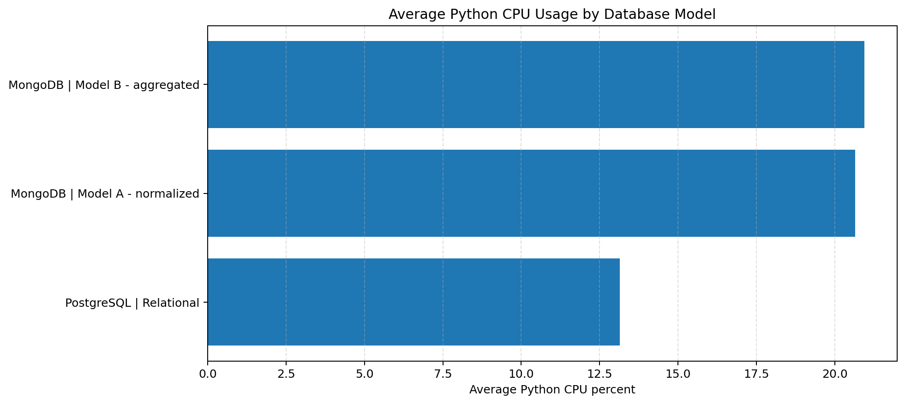
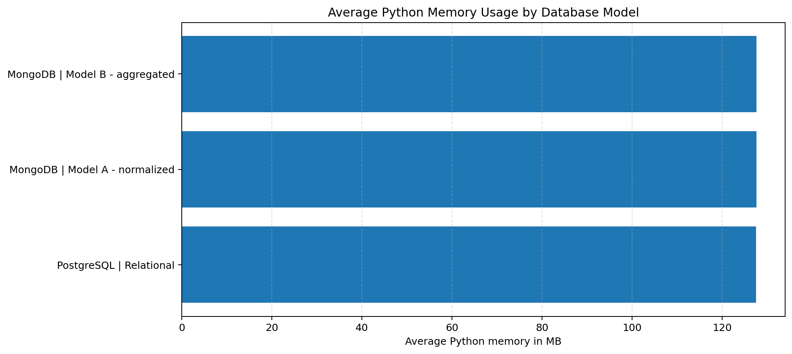
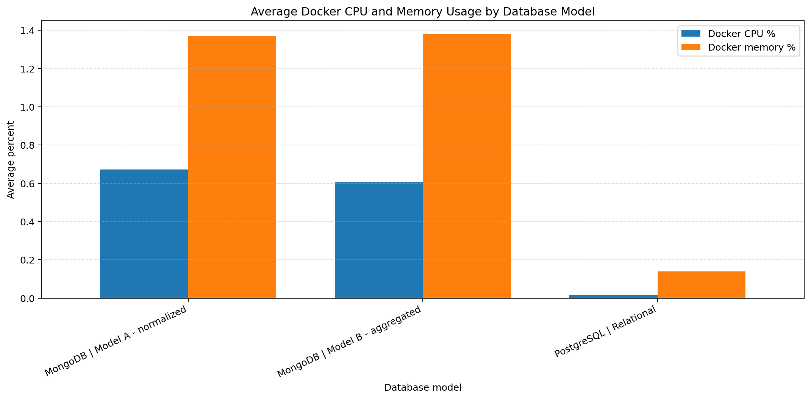

This dashboard presents the benchmark results for comparing PostgreSQL relational storage with two MongoDB document models: a normalized-like model and an aggregated schedule-document model.
The charts are separated by analytical purpose in order to avoid overcrowded labels and to support clearer academic interpretation.








| database | model | scenario | cache_mode | execution_mode | workers | average_duration_ms | median_duration_ms | min_duration_ms | max_duration_ms | average_rows_returned | average_python_cpu_percent | average_python_memory_mb | average_python_memory_diff_mb | average_docker_cpu_percent | average_docker_memory_percent | runs |
|---|---|---|---|---|---|---|---|---|---|---|---|---|---|---|---|---|
| MongoDB | Model A - normalized | annual_leave_overlap | cold | multi_process | 4 | 1869.87666 | 1868.11855 | 1840.6456 | 1895.5835 | 0.0 | 0.48 | 127.51950 | 0.00000 | 0.428 | 1.344 | 10 |
| MongoDB | Model A - normalized | annual_leave_overlap | cold | single_process | 1 | 36.95464 | 33.77330 | 27.4963 | 56.7999 | 0.0 | 39.86 | 127.68360 | 0.16410 | 0.445 | 1.342 | 10 |
| MongoDB | Model A - normalized | annual_leave_overlap | warm | multi_process | 4 | 1847.04536 | 1842.51790 | 1829.2535 | 1881.4124 | 0.0 | 0.75 | 127.51638 | 0.00156 | 1.050 | 1.410 | 10 |
| MongoDB | Model A - normalized | annual_leave_overlap | warm | single_process | 1 | 46.00189 | 49.34790 | 30.4170 | 54.1240 | 0.0 | 26.91 | 127.67931 | 0.16449 | 1.040 | 1.409 | 10 |
| MongoDB | Model A - normalized | dashboard_statistics | cold | multi_process | 4 | 1854.42117 | 1851.62270 | 1831.2803 | 1896.4857 | 4.0 | 0.51 | 127.51950 | 0.00000 | 0.699 | 1.331 | 10 |
| MongoDB | Model A - normalized | dashboard_statistics | cold | single_process | 1 | 48.61508 | 51.36170 | 22.9111 | 57.8346 | 1.0 | 30.89 | 127.68047 | 0.16097 | 0.778 | 1.329 | 10 |
| MongoDB | Model A - normalized | dashboard_statistics | warm | multi_process | 4 | 1921.34343 | 1897.08160 | 1874.5786 | 2057.0822 | 4.0 | 0.72 | 127.50000 | 0.00000 | 0.710 | 1.409 | 10 |
| MongoDB | Model A - normalized | dashboard_statistics | warm | single_process | 1 | 45.85375 | 48.17375 | 22.9076 | 58.6432 | 1.0 | 54.08 | 127.66410 | 0.16410 | 0.808 | 1.410 | 10 |
| MongoDB | Model A - normalized | employee_assignments | cold | multi_process | 4 | 1857.17732 | 1852.85750 | 1834.7823 | 1890.0949 | 212.0 | 0.50 | 127.51950 | 0.00000 | 0.544 | 1.341 | 10 |
| MongoDB | Model A - normalized | employee_assignments | cold | single_process | 1 | 42.95898 | 44.54375 | 28.8683 | 55.6940 | 53.0 | 35.00 | 127.68360 | 0.16410 | 0.717 | 1.340 | 10 |
| MongoDB | Model A - normalized | employee_assignments | warm | multi_process | 4 | 1863.07298 | 1865.95925 | 1834.3978 | 1888.3624 | 212.0 | 0.25 | 127.53361 | 0.00000 | 0.665 | 1.410 | 10 |
| MongoDB | Model A - normalized | employee_assignments | warm | single_process | 1 | 38.26140 | 38.50790 | 19.0766 | 56.2615 | 53.0 | 38.44 | 127.69764 | 0.16410 | 0.606 | 1.410 | 10 |
| MongoDB | Model A - normalized | full_schedule | cold | multi_process | 4 | 1861.54810 | 1856.11260 | 1836.5149 | 1886.5811 | 4.0 | 0.67 | 127.51950 | 0.00000 | 0.458 | 1.332 | 10 |
| MongoDB | Model A - normalized | full_schedule | cold | single_process | 1 | 39.26217 | 35.51980 | 19.5815 | 55.9930 | 1.0 | 41.85 | 127.68047 | 0.16097 | 0.428 | 1.332 | 10 |
| MongoDB | Model A - normalized | full_schedule | warm | multi_process | 4 | 1881.22359 | 1872.72900 | 1832.7815 | 1984.5553 | 4.0 | 0.32 | 127.50469 | 0.00039 | 0.465 | 1.410 | 10 |
| MongoDB | Model A - normalized | full_schedule | warm | single_process | 1 | 42.16143 | 43.19330 | 29.1693 | 53.3596 | 1.0 | 57.42 | 127.66761 | 0.16410 | 0.466 | 1.409 | 10 |
| MongoDB | Model A - normalized | position_coverage | cold | multi_process | 4 | 1861.93021 | 1863.91390 | 1835.8715 | 1885.5918 | 1856.0 | 0.75 | 127.51950 | 0.00000 | 0.480 | 1.308 | 10 |
| MongoDB | Model A - normalized | position_coverage | cold | single_process | 1 | 51.28722 | 52.32540 | 36.3118 | 62.4121 | 464.0 | 42.29 | 127.68360 | 0.16410 | 0.553 | 1.305 | 10 |
| MongoDB | Model A - normalized | position_coverage | warm | multi_process | 4 | 1850.39347 | 1846.14280 | 1829.7153 | 1872.3074 | 1856.0 | 0.40 | 127.52808 | 0.00000 | 1.035 | 1.414 | 10 |
| MongoDB | Model A - normalized | position_coverage | warm | single_process | 1 | 46.31251 | 45.05850 | 24.2511 | 59.9064 | 464.0 | 41.02 | 127.69374 | 0.16449 | 1.060 | 1.415 | 10 |
| MongoDB | Model B - aggregated | annual_leave_overlap | cold | multi_process | 4 | 1860.70633 | 1858.69480 | 1827.5739 | 1889.1153 | 0.0 | 0.83 | 127.52301 | 0.00000 | 0.543 | 1.357 | 10 |
| MongoDB | Model B - aggregated | annual_leave_overlap | cold | single_process | 1 | 41.25562 | 40.95980 | 19.7893 | 52.1335 | 0.0 | 46.33 | 127.68398 | 0.16136 | 0.477 | 1.358 | 10 |
| MongoDB | Model B - aggregated | annual_leave_overlap | warm | multi_process | 4 | 1923.12776 | 1888.74550 | 1865.5896 | 2097.0063 | 0.0 | 0.39 | 127.51677 | 0.00000 | 0.900 | 1.431 | 10 |
| MongoDB | Model B - aggregated | annual_leave_overlap | warm | single_process | 1 | 40.57118 | 40.06785 | 26.6951 | 54.6036 | 0.0 | 29.26 | 127.67774 | 0.16136 | 0.940 | 1.434 | 10 |
| MongoDB | Model B - aggregated | dashboard_statistics | cold | multi_process | 4 | 1860.68141 | 1860.59675 | 1836.4921 | 1880.6251 | 4.0 | 0.41 | 127.51950 | 0.00000 | 0.473 | 1.321 | 10 |
| MongoDB | Model B - aggregated | dashboard_statistics | cold | single_process | 1 | 45.81295 | 43.80715 | 34.6731 | 58.5188 | 1.0 | 23.53 | 127.68399 | 0.16449 | 0.462 | 1.320 | 10 |
| MongoDB | Model B - aggregated | dashboard_statistics | warm | multi_process | 4 | 1849.28307 | 1851.33725 | 1822.9094 | 1893.3231 | 4.0 | 0.24 | 127.51560 | 0.00000 | 0.900 | 1.413 | 10 |
| MongoDB | Model B - aggregated | dashboard_statistics | warm | single_process | 1 | 38.56135 | 37.79050 | 31.9864 | 50.4839 | 1.0 | 40.54 | 127.68009 | 0.16449 | 1.035 | 1.415 | 10 |
| MongoDB | Model B - aggregated | employee_assignments | cold | multi_process | 4 | 1863.87182 | 1861.68640 | 1847.4479 | 1879.5322 | 212.0 | 0.40 | 127.51950 | 0.00000 | 0.442 | 1.346 | 10 |
| MongoDB | Model B - aggregated | employee_assignments | cold | single_process | 1 | 38.47062 | 36.20715 | 20.5506 | 59.1624 | 53.0 | 65.99 | 127.68360 | 0.16410 | 0.470 | 1.343 | 10 |
| MongoDB | Model B - aggregated | employee_assignments | warm | multi_process | 4 | 1895.18597 | 1883.48195 | 1843.9249 | 1976.4023 | 212.0 | 0.64 | 127.51560 | 0.00000 | 0.729 | 1.433 | 10 |
| MongoDB | Model B - aggregated | employee_assignments | warm | single_process | 1 | 43.19254 | 44.16055 | 22.6115 | 56.3999 | 53.0 | 40.41 | 127.67970 | 0.16410 | 0.913 | 1.431 | 10 |
| MongoDB | Model B - aggregated | full_schedule | cold | multi_process | 4 | 1845.72347 | 1843.95195 | 1824.4753 | 1872.0320 | 0.0 | 0.52 | 127.51950 | 0.00000 | 0.449 | 1.322 | 10 |
| MongoDB | Model B - aggregated | full_schedule | cold | single_process | 1 | 40.63906 | 40.42750 | 19.8073 | 54.1575 | 0.0 | 46.19 | 127.68360 | 0.16410 | 0.507 | 1.320 | 10 |
| MongoDB | Model B - aggregated | full_schedule | warm | multi_process | 4 | 1861.79507 | 1867.06230 | 1824.3643 | 1886.7141 | 0.0 | 0.75 | 127.51560 | 0.00000 | 0.472 | 1.419 | 10 |
| MongoDB | Model B - aggregated | full_schedule | warm | single_process | 1 | 33.81983 | 37.24595 | 16.5189 | 53.5943 | 0.0 | 44.80 | 127.67970 | 0.16410 | 0.431 | 1.415 | 10 |
| MongoDB | Model B - aggregated | position_coverage | cold | multi_process | 4 | 1845.74103 | 1846.14420 | 1822.5637 | 1866.8420 | 1856.0 | 0.59 | 127.52340 | 0.00000 | 0.505 | 1.344 | 10 |
| MongoDB | Model B - aggregated | position_coverage | cold | single_process | 1 | 54.94011 | 54.62335 | 39.7303 | 63.9149 | 464.0 | 18.28 | 127.68750 | 0.16410 | 0.546 | 1.340 | 10 |
| MongoDB | Model B - aggregated | position_coverage | warm | multi_process | 4 | 1869.81412 | 1873.08800 | 1833.3501 | 1896.4641 | 1856.0 | 0.57 | 127.51950 | 0.00000 | 0.438 | 1.420 | 10 |
| MongoDB | Model B - aggregated | position_coverage | warm | single_process | 1 | 41.78320 | 38.96940 | 27.2895 | 62.5030 | 464.0 | 58.21 | 127.68360 | 0.16410 | 0.470 | 1.417 | 10 |
| PostgreSQL | Relational | annual_leave_overlap | cold | multi_process | 4 | 1595.98793 | 1376.95070 | 1338.1123 | 2468.8363 | 0.0 | 1.32 | 127.53520 | 0.00000 | 0.007 | 0.130 | 10 |
| PostgreSQL | Relational | annual_leave_overlap | cold | single_process | 1 | 27.04220 | 27.99370 | 14.4399 | 37.4053 | 0.0 | 5.58 | 127.53520 | 0.00000 | 0.007 | 0.130 | 10 |
| PostgreSQL | Relational | annual_leave_overlap | warm | multi_process | 4 | 1408.91584 | 1394.99880 | 1353.1922 | 1508.2986 | 0.0 | 0.78 | 127.47465 | 0.00000 | 0.084 | 0.150 | 10 |
| PostgreSQL | Relational | annual_leave_overlap | warm | single_process | 1 | 26.75522 | 24.65825 | 13.2331 | 39.1315 | 0.0 | 29.04 | 127.47465 | 0.00000 | 0.003 | 0.146 | 10 |
| PostgreSQL | Relational | dashboard_statistics | cold | multi_process | 4 | 1351.71945 | 1347.76520 | 1324.9631 | 1393.6423 | 4.0 | 0.36 | 127.51950 | 0.00000 | 0.064 | 0.128 | 10 |
| PostgreSQL | Relational | dashboard_statistics | cold | single_process | 1 | 33.11142 | 33.76825 | 22.5728 | 39.4690 | 1.0 | 36.30 | 127.51950 | 0.00000 | 0.025 | 0.125 | 10 |
| PostgreSQL | Relational | dashboard_statistics | warm | multi_process | 4 | 1464.75454 | 1408.72760 | 1342.6027 | 1764.6165 | 4.0 | 0.68 | 127.48670 | 0.00351 | 0.001 | 0.150 | 10 |
| PostgreSQL | Relational | dashboard_statistics | warm | single_process | 1 | 25.81917 | 24.92140 | 14.3410 | 44.4500 | 1.0 | 14.23 | 127.48319 | 0.00000 | 0.004 | 0.147 | 10 |
| PostgreSQL | Relational | employee_assignments | cold | multi_process | 4 | 1445.68826 | 1357.54225 | 1337.2561 | 2122.6644 | 212.0 | 0.24 | 127.52107 | 0.00000 | 0.000 | 0.129 | 10 |
| PostgreSQL | Relational | employee_assignments | cold | single_process | 1 | 29.22129 | 29.04160 | 14.4375 | 37.4350 | 53.0 | 21.68 | 127.51950 | 0.00000 | 0.038 | 0.129 | 10 |
| PostgreSQL | Relational | employee_assignments | warm | multi_process | 4 | 1406.49898 | 1393.08700 | 1356.1395 | 1477.7750 | 212.0 | 1.22 | 127.41410 | 0.00000 | 0.001 | 0.149 | 10 |
| PostgreSQL | Relational | employee_assignments | warm | single_process | 1 | 26.20618 | 24.69140 | 14.2237 | 38.7455 | 53.0 | 13.26 | 127.41410 | 0.00000 | 0.002 | 0.147 | 10 |
| PostgreSQL | Relational | full_schedule | cold | multi_process | 4 | 1349.42522 | 1343.63750 | 1326.2053 | 1399.0571 | 0.0 | 0.47 | 127.51950 | 0.00000 | 0.008 | 0.126 | 10 |
| PostgreSQL | Relational | full_schedule | cold | single_process | 1 | 29.01780 | 29.51055 | 22.2941 | 36.0739 | 0.0 | 26.21 | 127.51950 | 0.00000 | 0.008 | 0.124 | 10 |
| PostgreSQL | Relational | full_schedule | warm | multi_process | 4 | 1395.70691 | 1375.15095 | 1339.2336 | 1622.6340 | 0.0 | 0.53 | 127.43438 | 0.00000 | 0.001 | 0.149 | 10 |
| PostgreSQL | Relational | full_schedule | warm | single_process | 1 | 29.54301 | 29.57235 | 15.8859 | 41.2779 | 0.0 | 39.35 | 127.43867 | 0.00000 | 0.001 | 0.148 | 10 |
| PostgreSQL | Relational | position_coverage | cold | multi_process | 4 | 1347.80318 | 1345.41635 | 1331.1021 | 1371.9932 | 1856.0 | 0.59 | 127.51950 | 0.00000 | 0.000 | 0.133 | 10 |
| PostgreSQL | Relational | position_coverage | cold | single_process | 1 | 25.27804 | 25.18800 | 15.1327 | 38.4229 | 464.0 | 53.84 | 127.51950 | 0.00000 | 0.000 | 0.130 | 10 |
| PostgreSQL | Relational | position_coverage | warm | multi_process | 4 | 1451.85752 | 1429.05340 | 1368.8156 | 1564.8309 | 1856.0 | 0.96 | 127.52464 | 0.00000 | 0.097 | 0.150 | 10 |
| PostgreSQL | Relational | position_coverage | warm | single_process | 1 | 25.50070 | 26.64370 | 15.0265 | 35.4647 | 464.0 | 16.21 | 127.52464 | 0.00000 | 0.000 | 0.148 | 10 |